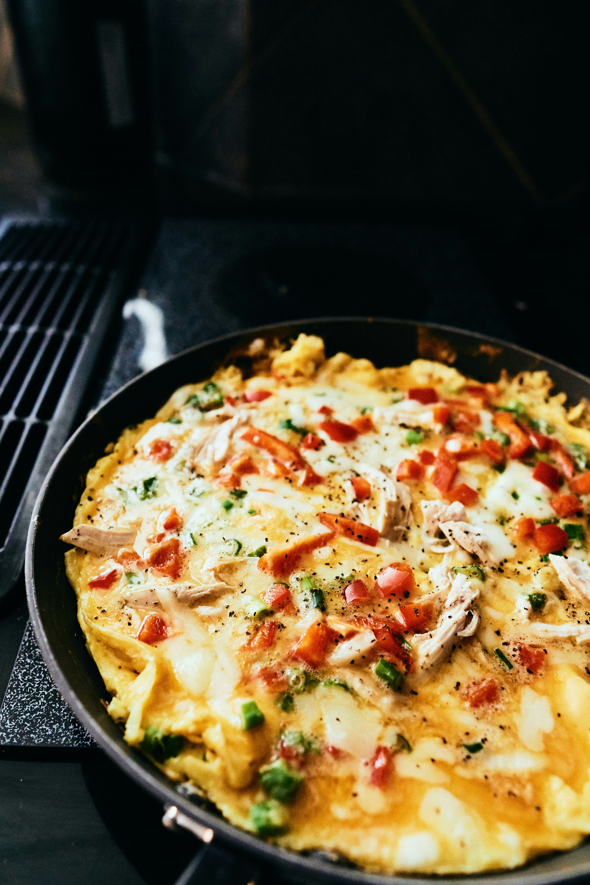

home
Spanish Omelette/h2>

A Quick, Delicious Mediterannean Omelette
A fully loaded spanish omelette with protein, and addmittedly, some fat. But that's ok as long as you've been good on the other meals that day.
You can enjoy this meal with a salad and rice, or a slice of bread. I've even seen somebody place this in a sandwich for lunch the next day.
Ingredients
- Chorizo
- 5 Eggs mixed
- 1 shallot / half an onion
- Salt
- Pepper
- Pinch of oregano
Steps
- Cut up the chorizo into small bite-sized chunks.
- Fry the chorizo in a pan with butter or some olive oil.
- There's no need to add garlic because the chorizo already contains garlic. Feel free to add more if you would like. Add the oregano
- Add the onion and fry with the Chorizo.
- Go ahead and add the beaten eggs
- Fry for 3 minutes until done on one side.
- Flip and fry the other side. Use a plate to help if needed
- That's it! Serve and enjoy